Initialize an existing directory as a Git repository
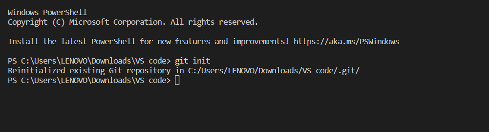To record or snapshot the file permanently in the version history we use the commit command.
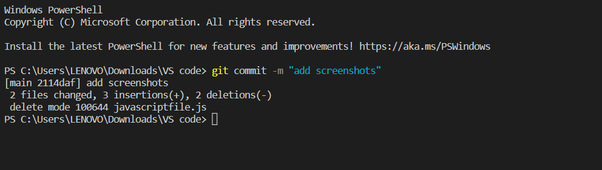The files can be added to the staging area using git add command.
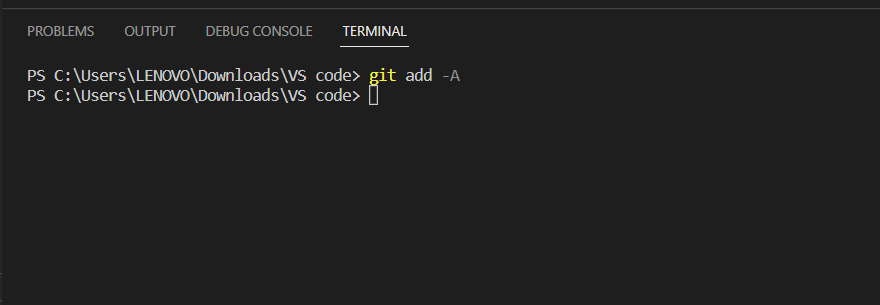Retrieve an entire repository from a hosted location via URL
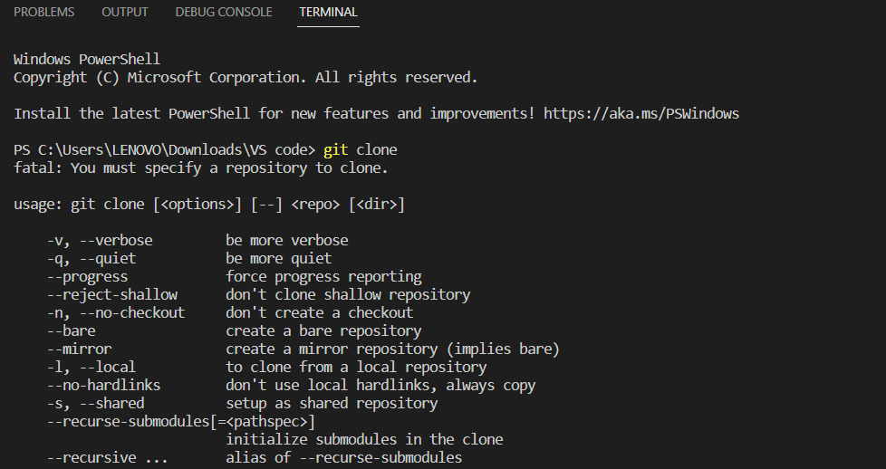Show modified files in working directory, staged for your next commit
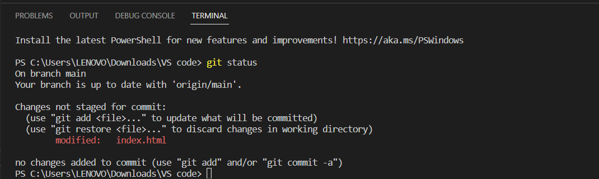Add a file as it looks now to your next commit (stage)
Compare staging area with last commit
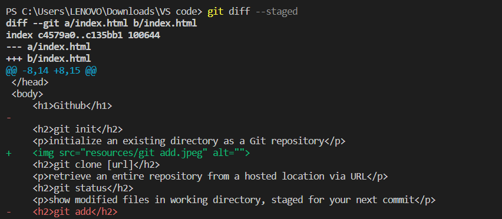Commit your staged content as a new commit snapshot
List your branches. a * will appear next to the currently active branch
Switch to another branch and check it out into your working directory
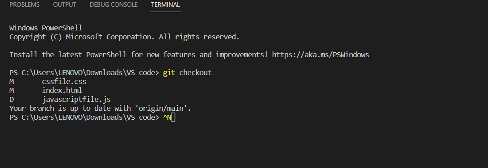Merge the specified branch’s history into the current one
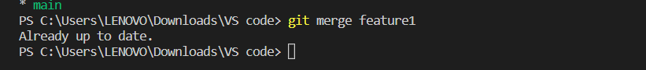Remove the file from repository
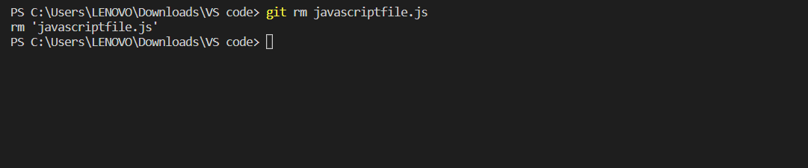This command shows the metadata and content changes of the specified commit
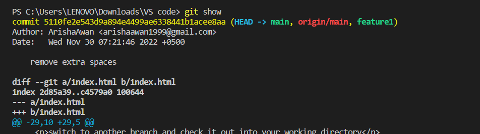To add a new remote, use the git remote add command on the terminal, in the directory your repository is stored at.
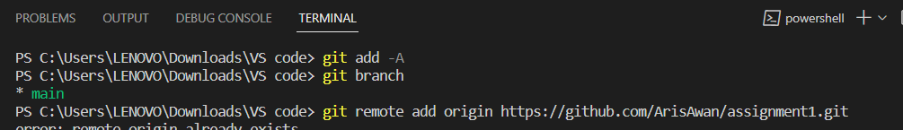To list the version history for the current branch we use the command git log.
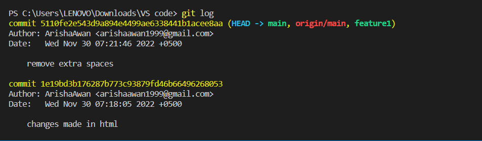The git push command is used to upload local repository content to a remote repository.
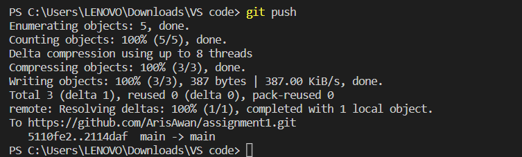